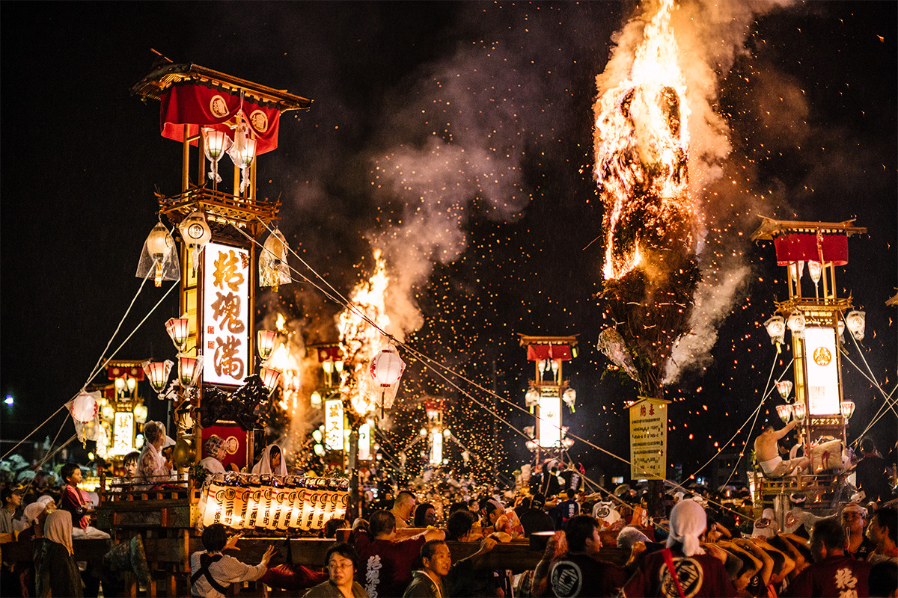
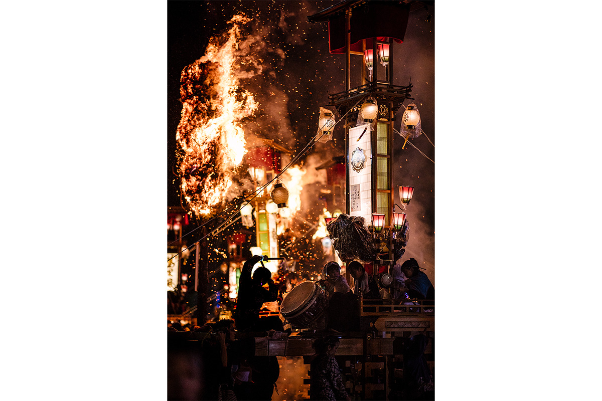
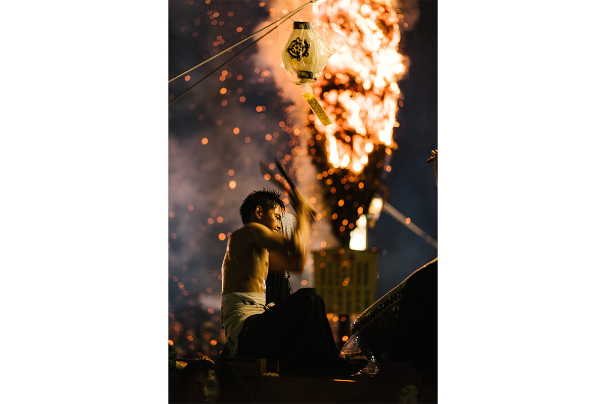

Префектура Исикава · Ното-тё, Усицу · фестиваль
Фестиваль Абарэ в Усицу: кирико в искрах огня и паланкины, брошенные в море

Летом по всему полуострову Ното носят по улицам огромные светящиеся фонари кирико. Первым сезон открывает фестиваль Абарэ в портовом квартале Усицу: факелы, искры и паланкины, которые в конце бросают в воду.
Начало сезона
Первый из двухсот фонарей
Каждое лето в городах и деревнях полуострова Ното проходят фестивали кирико. Кирико это огромные сверкающие фонари, которые носят по улицам. Всего на Ното их около двухсот, и сезон открывает фестиваль Абарэ в Усицу, портовом квартале городка Ното-тё.

Фестиваль идёт два дня. В первый вечер в темноте вспыхивают огромные факелы, и вокруг них движутся около сорока кирико. На второй день к фонарям присоединяются паланкины микоси, переносные святилища, и шествие с шумом проходит по улицам квартала.
Начало празднику, по преданию, положила эпидемия. Около 350 лет назад в Усицу пришла тяжёлая болезнь, и жители пригласили из святилища Гион в Киото божество Годзу Тэнно и провели обряд. Синие осы, ставшие священным духом, изгнали болезнь. Обрадованные люди подняли на плечи кирико, и с тех пор праздник повторяется каждый год.
Кульминация
Чем больше сломано, тем довольнее боги
Главное зрелище состоит из двух частей. Сначала носильщики подставляют себя под дождь искр от больших факелов. Потом наступает развязка: паланкины бросают в море и в реку и разбивают. Считается, что чем сильнее их разломают, тем больше радуются боги. Говорят, именно за эту ярость праздник и назвали Абарэ, то есть «буйный».

После землетрясения
Праздник как знак восстановления
Фестивали кирико давно привлекают на Ното путешественников, но землетрясение 1 января 2024 года сильно ударило по полуострову. В Усицу пострадали лесопилка, где готовят дерево для кирико, и строительная мастерская, которая делает паланкины. Деньги на праздник собрали в том числе через краудфандинг, и в 2024 году фестиваль состоялся 5 и 6 июля. Местные жители решили сделать Абарэ символом восстановления Ното.
В 2025 году фестиваль прошёл 4 и 5 июля, в 2026 году 3 и 4 июля. Обычно его проводят в первые пятницу и субботу июля.
Фестиваль Абарэ
- Адрес
- префектура Исикава, уезд Хосу, Ното-тё, квартал Усицу
- Даты
- первые пятница и суббота июля (в 2026 году 3–4 июля)
- Как добраться
- на машине около 25 минут от развязки «Ното Сатояма Эйрпорт» скоростной дороги Ноэцу